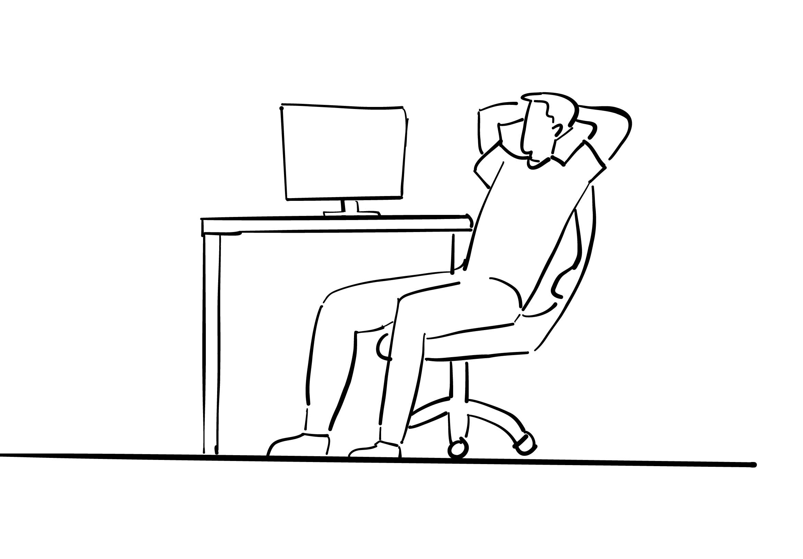
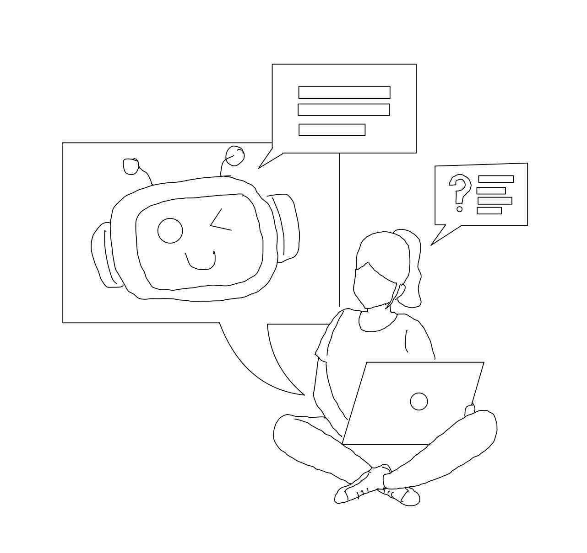
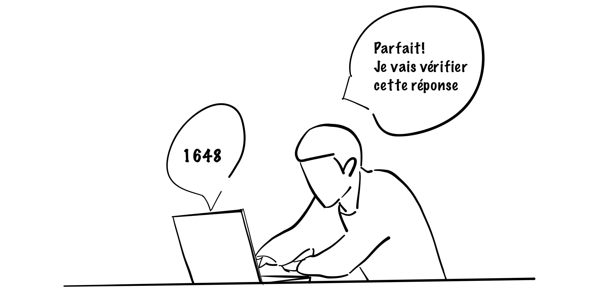
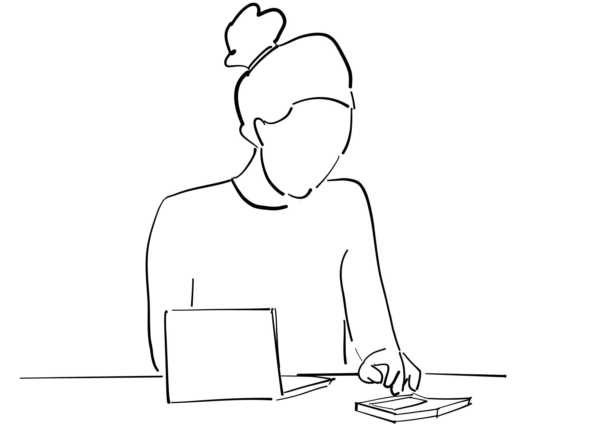

L’étudiant délègue entièrement ou en grande partie le travail intellectuel au tuteur automatisé, sans effectuer de contre-vérification ni chercher à s’approprier les concepts. Il s’agit d’un cas flagrant d’infraction académique et de manquement à l’intégrité intellectuelle.
L’étudiant sollicite le TA pour obtenir des démarches complètes ou des indices précis, puis s’efforce de comprendre et d’assimiler les informations fournies. On note ici une dépendance plus marquée, mais accompagnée d’un effort réel d’appropriation intellectuelle. La situation est plus ambiguë : l’étudiant n’est pas nécessairement en infraction, mais frôle le risque d’une utilisation non profitable à long terme pour son apprentissage.
L’étudiant intègre le TA comme un partenaire pédagogique pour approfondir sa compréhension. Il exige des explications et un dialogue constructif avec l’IA, tout en complétant lui-même les travaux. Cette approche se veut équilibrée, sans délégation complète de l’effort intellectuel. L’intégrité est préservée, mais l’enseignant doit rester vigilant quant au caractère réellement formateur de la démarche.
L’étudiant réalise l’entièreté de son devoir par ses propres moyens, puis utilise le TA pour une vérification de ses réponses ou une optimisation mineure. L’IA n’est ici qu’un outil d’ajustement, sans influencer la réflexion initiale. Cette approche apparaît la plus conforme aux principes d’intégrité intellectuelle : l’étudiant reste maître de son apprentissage et démontre un savoir-faire et un savoir-être alignés avec les objectifs académiques.
N.B. : Ces profils peuvent servir d’inspiration pour affiner votre intuition. Toutefois, cela ne signifie pas qu’un étudiant ayant un profil « passif » soit automatiquement en situation d’infraction académique, ni qu’un étudiant adoptant un profil « proactif » ait nécessairement produit un travail légitime et exempt de toute infraction académique.